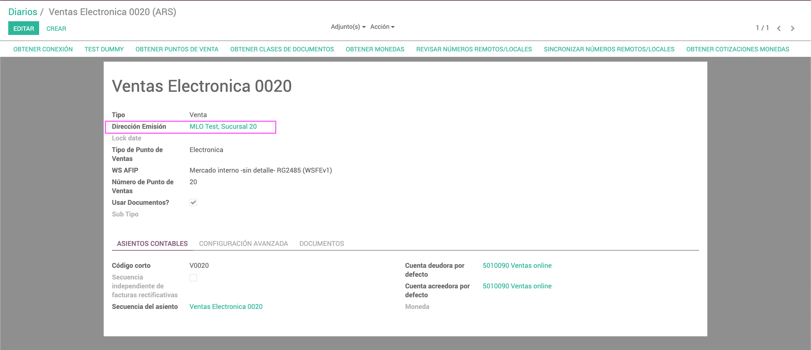

<section class="oe_container">
    <div class="oe_row oe_spaced">
        <div class="oe_span12">
            <h2 class="oe_slogan">Moogah - Add-ons mejoras</h2>
            <p class="oe_mt32">
                Este app incluye un campo adicional en los Diarios de Ventas que permite especificar un registro de Partner para poder utilizar la Direcci&oacute;n de Facturaci&oacute;n de la Sucursal.
            </p>
		<div class="oe_span12">
			<div class="oe_row_img oe_left">
				
			</div>
		</div>
            
        </div>
    </div>
</section>

